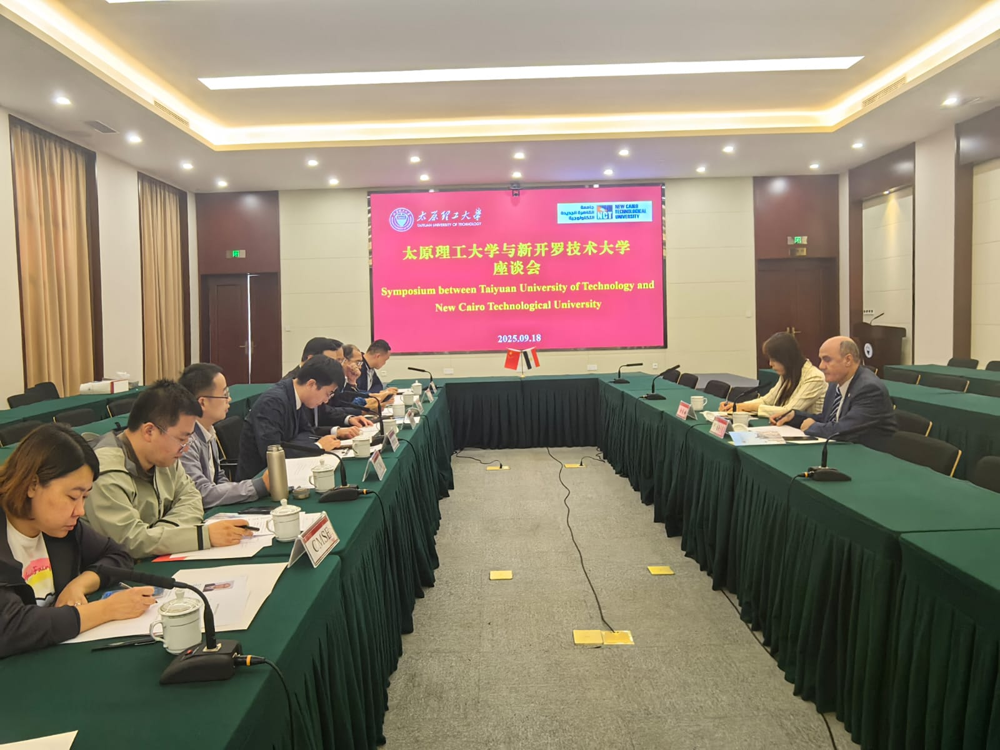
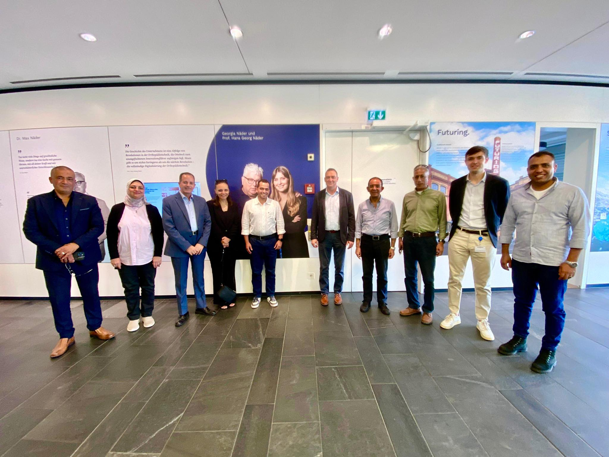

Academic Events
University Conferences

September 18, 2025
New Cairo Tech University partners with China's Taiyuan University to establish first branch campus in Egypt
- a historic first for Egyptian technological education.President Prof.
Dr. Tarek Abdel Malak
visited Taiyuan University, meeting Chinese academic leaders to create their first Egyptian branch campus, enabling academic and research exchange. The partnership includes access to Taiyuan's advanced laboratories and over 100 academic specializations, supporting Egypt's vision for industry-aligned technological education and strengthening China-Egypt educational relations.

September 14, 2025
New Cairo Tech University Delegation Visits Germany's Ottobock
A university delegation led by President Prof.
Dr. Tarek Abdel Malak
visited Ottobock Germany, global leader in prosthetic manufacturing. The visit focused on inspecting equipment for 6 new assembly centers across Egypt and training technical staff at Ottobock Academy. The delegation examined production facilities and quality standards. This supports Egypt's initiative to provide assistive devices for people with disabilities, promoting independent living and social integration through advanced German technology and expertise.
September 10, 2024
Partnership Focus: - Student and faculty exchange programs - Joint training and professional certifications - Collaboration in advanced technology fields - Short-term study programs The MoU aims to enhance industry-oriented education and promote international academic exchange, supporting global workforce development through shared expertise and resources.
New Cairo Tech University Signs MoU with Beijing Youth Politics College
New Cairo Technological University has signed a Memorandum of Understanding with Beijing Youth Politics College to strengthen academic and cultural cooperation between Egypt and China. The agreement was signed by :
Prof.Dr. Tarek Abdel Malak
,University President, and Qiao Dongliang, College President, during a ceremony where both institutions exchanged commemorative shields.Partnership Focus: - Student and faculty exchange programs - Joint training and professional certifications - Collaboration in advanced technology fields - Short-term study programs The MoU aims to enhance industry-oriented education and promote international academic exchange, supporting global workforce development through shared expertise and resources.

june 12, 2025
New Cairo Tech University Signs Cooperation Protocol with Yangzhou University
New Cairo Technological University, under the leadership of Prof.